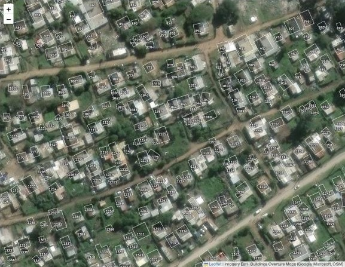
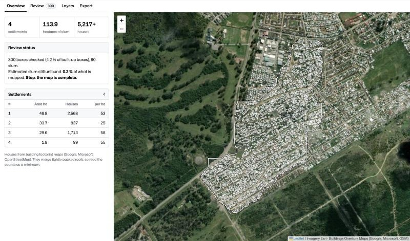
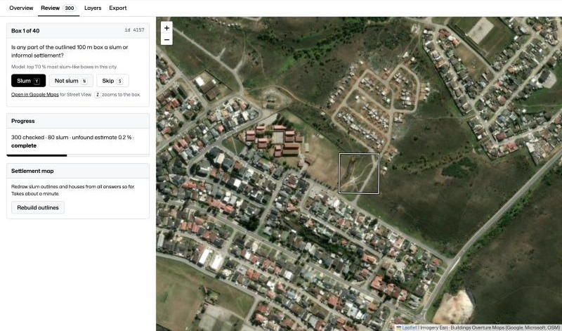

Urban intelligence for informal settlements
Map every informal settlement in a city, and count its houses.
More than a billion people live in slums and informal settlements, and many of these places are missing from official maps. URBIS finds them in satellite imagery, asks a city official to confirm the doubtful places, then draws each settlement's boundary and every house, numbered.

What a city gets



Choose the area
Search for a city and set the box to map: 3 × 3 km for a quick test (about 5 min), up to 600 km².
The model scores it
Every built-up 100 m box is scored by the URBIS model, a satellite vision transformer trained on official slum maps. Building footprints come from Overture Maps.
You confirm
Answer slum or not slum, most likely first. The order adapts to your answers.
Map and export
Outlines, area, houses and density. GeoJSON, KML, GeoPackage, Shapefile, FlatGeobuf, CSV, GeoTIFF and a printable report.
Built for city governments
| Any city | One general model works on cities it has never seen. It never uses labels of the city being mapped. |
|---|---|
| People in the loop | The AI ranks; city officials decide. Every settlement on the map was confirmed by a person. |
| Every house | Each building is its own numbered polygon, from open footprint maps (Google, Microsoft, OpenStreetMap). |
| Private by design | Runs on the city's own computer. Imagery from Esri World Imagery; place search from OpenStreetMap. |
| Fits existing tools | Nine export formats open directly in QGIS, ArcGIS, Google Earth and Excel. |
Map your first city in minutes
Search a place, keep the 3 × 3 km test box, and URBIS has it ready for review in about 5 minutes.